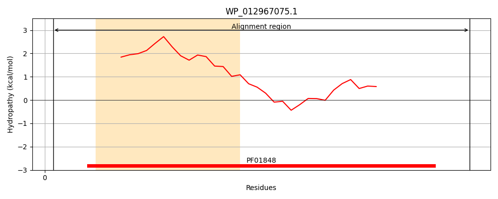
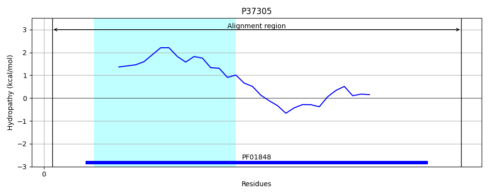
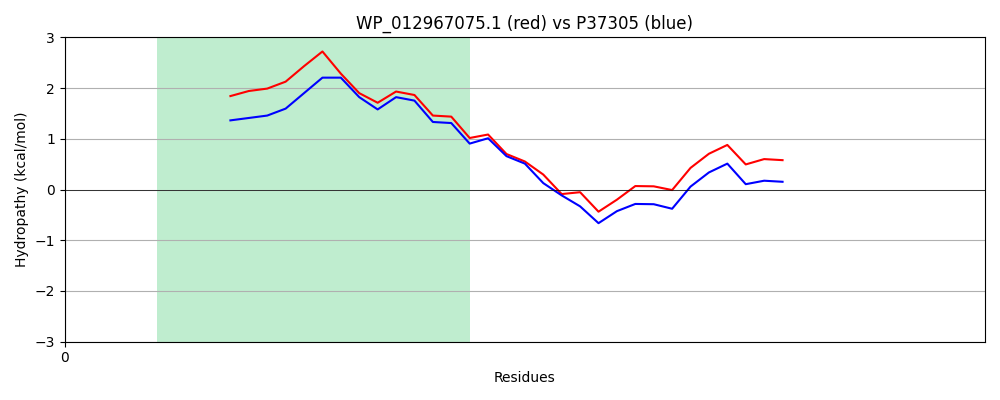

Hit Accession: P37305
Hit TCID: 1.E.53.1.2
Hit Description: gnl|BL_ORD_ID|10091 gnl|TC-DB|P37305|1.E.53.1.2 Protein HokA OS=Escherichia coli (strain K12) GN=hokA PE=1 SV=1
Mach Len: 50
e:0.000000
Query TMS Count : 1
Hit TMS Count: 1
TMS-Overlap Score: 0.900000
Predicted Substrates:None
BLAST Alignment:
| Protein Hydropathy Plots: | |
|---|---|
|  |  |
Pairwise Alignment-Hydropathy Plot: | |
|  | |